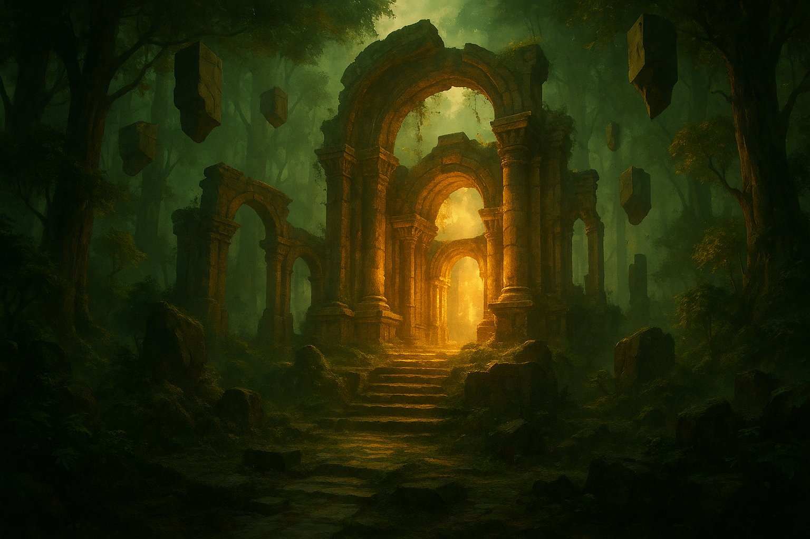

1位

ゼルダの伝説 時のオカリナ リメイク
1998年に発売され「史上最高のゲーム」と称された伝説の名作が、Nintendo Switch 2向けにフルリメイクされて登場。ハイラル王国を舞台にリンクが時を超えてガノンドロフの野望に立ち向かう壮大な冒険はそのままに、現代のグラフィックと操作感で完全刷新。2026年6月のNintendo Directで発表された瞬間、最大同時視聴者380万人が沸いた超話題作。
おすすめ理由：往年のファンも新規プレイヤーも楽しめる圧倒的な完成度。ニンダイ発表直後からトレーラー再生数トップを独走する2026年最大の注目リメイク。